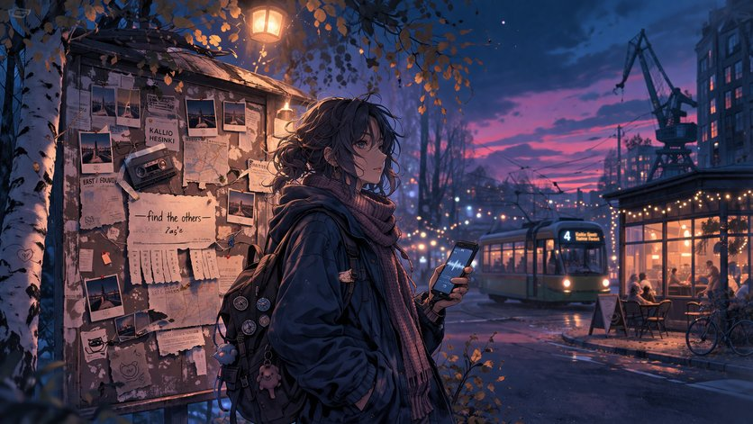

A sample game to show developers how to use JSON files to script their game in VNgine.
| Status | In development |
|---|---|
| Genre | Comedy, fourth-wall breaking, engine demo |
| Length | A few minutes |
| Languages | English (Nederlands planned) |
| Version | 0.1.0 |
| Author | Thijs Janssen |
| Links | VNgine repository — the game lives in qml/game/ |
The sample story is not really a story. It is the reference game bundled with the engine: every feature the engine has, exercised in a script you can read. If you are writing your first game, this is the file to copy from.
You stand in front of a noticeboard at your local community centre. A peculiar piece of paper explains that a hobby programmer has been building a visual novel engine for SailfishOS — and the player works out, loudly, that they are inside it.
| Feature | How the sample uses it |
|---|---|
| Backgrounds | bg commands switching between the community centre exterior and a noticeboard close-up |
| Dialogue | Narration (speaker: null) alongside named speakers |
| Sprites | Liisa, positioned and swapped during the scene |
| Variables | A panic integer, raised and lowered by choices |
| Conditional choices | A "Don't panic" option that only appears once panic < 3 |
| Labels and jumps | A loop back to start_panicing until the player calms down |
| Text interpolation | %player_title%, filled in from a settings text field |
| Styles | Switching the textbox style mid-scene with a style command |
| Save labels | save_display_variable set to chapter_title, so saves read "Prologue" |
| Settings | Audio channels, language selectors, toggles, a dropdown, text fields and a slider |
The sample game is what you get when you build and run VNgine as-is — there is nothing extra
to install. Clone the repository, build harbour-vngine for your device, and the
sample game starts from the title screen.
Game — by Thijs Janssen. The game itself, excluding the engine and assets, is licence free.
Music — Origami by Scott Buckley (scottbuckley.com.au), promoted by Chosic, CC BY 4.0.
Character art — Liisa, originally "miki" from the miki asset pack by Noraneko Games.